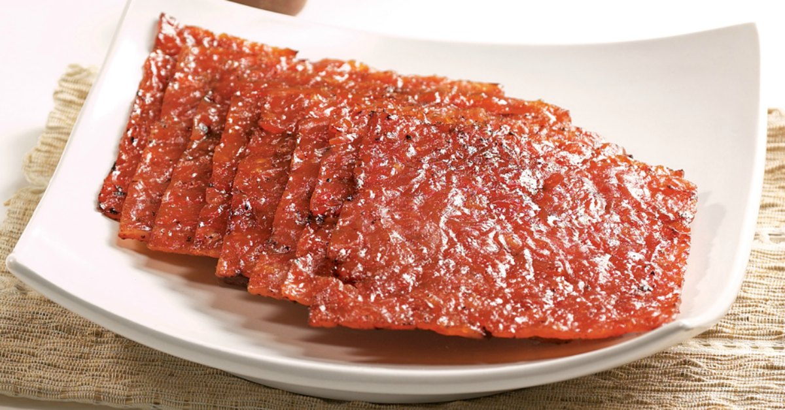

Bakkwa
Chinese. Salty sweet dried meat. Beef, Pork or Mutton.
 - Wanton Mee - char siew - dim sum - Curry Laksa - Asam Laksa - Katong Laksa - okra - Bak Chor Mee - Tau Huay - Chwee Kueh - Nasi Lemak - Mee Siam - Mee Rebus - Roti Prata - Rojak - Char Kway Teow - Popiah